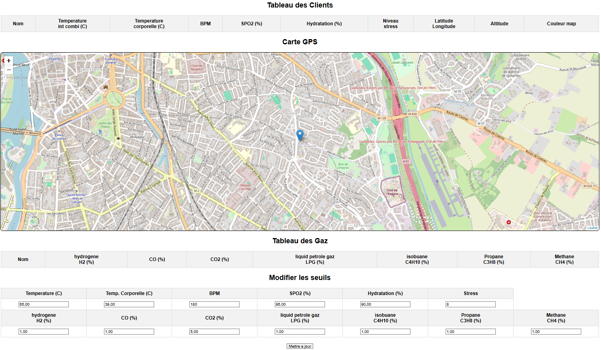
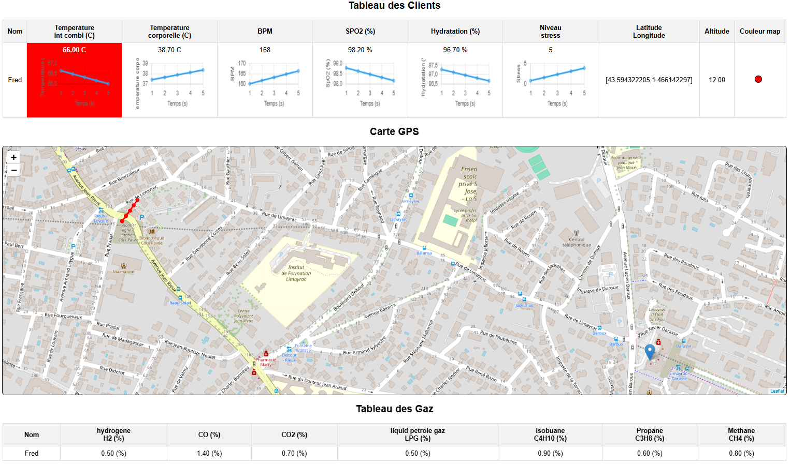

Serveur web et capteurs
← RetourDescription :
J'ai utilisé plusieurs ESP32 pour récupérer des données de capteurs et les envoyer à un serveur ayant une IHM web incluant des tableaux de données, des graphiques, une carte et des niveaux de seuils, le tout avec un rafraichissement dynamique.
Chaque client est un ESP32 qui possède ses propres capteurs externes. Il communique en WIFI (prochainement en LoRa ou 4G) avec le serveur qui affiche les données sur un page web.
Etapes :
- Codage en C++ de l’ESP32 qui récupère des données de capteurs (GPS, gaz, température, humidité, spO2, bpm, etc). Tous les capteurs n’ayant pas été achetés, on simulera les données qu’il envoie au serveur. Les données sont envoyées en WIFI au serveur (une prochaine étape sera de le faire en LoRa ou 4G)
- Codage de l’ESP32 serveur qui récupère les données qui arrivent en WIFI de plusieurs ESP32 capteurs
- Le serveur est connecté au WIFI de la box internet de l’opérateur internet afin de pouvoir accéder à la page web de l’IHM (une prochaine étape sera de le faire en LoRa ou 4G)
- Création de l’interface web en HTML, utilisant un JSON et websocket pour de la mise à jour dynamique de l’IHM. Intégration de tableaux de données, de graphiques, d’une carte openstreetmap et d’une surbrillance des données lorsque les seuils modifiables sont atteints.
Environnement technique :
ArduinoIDE, ESP32, C++, WIFI, HTML, Websocket

